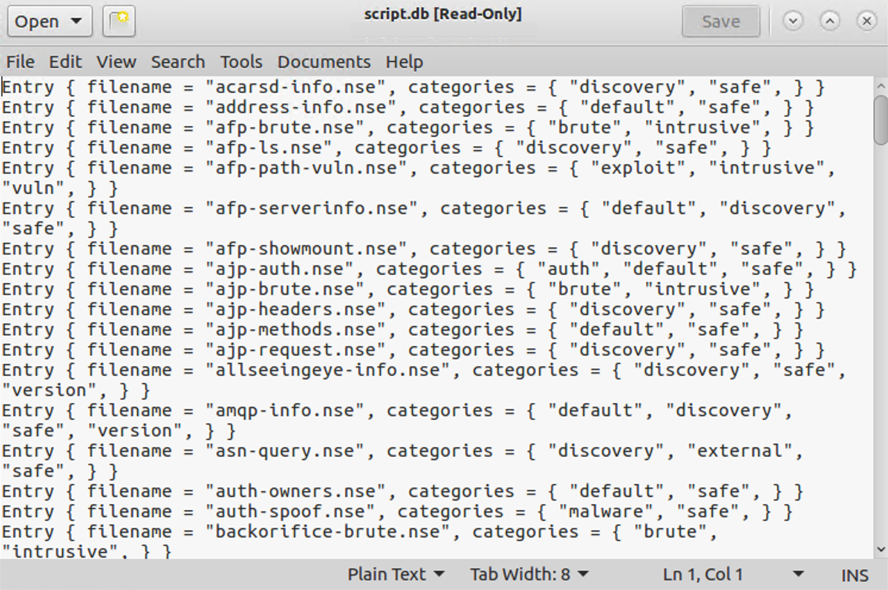

Lab 2.3: NSE
Objectives
- To analyze the categories of Nmap Scripting Engine (NSE) scripts
- To run some of the most useful NSE scripts
- To gather and analyze web server robots.txt files
- To gather SMB information from a target Windows machine, including the hostname and a VERY useful list of users on the box
- To scan a target environment to find SSH servers that speak the older, weaker SSH protocol version 1
- To compare how Nmap behaves when NSE scripts are run with and without version scanning
Table of Contents
Lab Setup
Ensure that you can ping 10.10.10.10 in the 560 target environment.
$ ping 10.10.10.10
Root Access
You will need root access for the majority of the lab. This is a reminder to be aware of the prompts. If you see a prompt containing #, it means the command is run as root. To become root, type the following command.
sec560@slingshot:~$ sudo su - root@slingshot:~#
Lab – Step-by-Step Instructions
1. The script.db File
We will now look at the functionality of the Nmap Scripting Engine. Start by opening up the file that contains the inventory of all the scripts that have been defined for NSE:
$ gedit /usr/local/share/nmap/scripts/script.db
If you don’t like gedit, a simple WYSIWYG editor, you can use another Linux/UNIX editor with which you are familiar, such as vi, emacs, nano, and so on.

This script.db file has a simple format, essentially just mapping script categories, such as "safe", "intrusive", and "vulnerability", to the specific script files, which end in .nse. Note that some scripts are in multiple categories, such as dns-zone-transfer.nse, which is in the discovery and intrusive categories.
Let’s count the number of scripts in some of the categories by sending the script.db file through the wc (word count) command with the -l (where that lowercase L stands for line count) option:
sec560@slingshot:~$ cd /usr/local/share/nmap/scripts sec560@slingshot:/opt/nmap/scripts$ cat script.db | grep safe | wc -l 335 sec560@slingshot:/opt/nmap/scripts$ cat script.db | grep discovery | wc -l 303 sec560@slingshot:/opt/nmap/scripts$ cat script.db | grep intrusive | wc -l 210
2. The http-robots.txt.nse Script
Let’s experiment with the http-robots.txt.nse script. This script pulls the robots.txt file from target web servers. The robots.txt file tells well-behaved web crawlers (such as those from the major search engines that are attempting to find new pages on the World Wide Web) to ignore given directories or pages on a website because they have information that the website owner doesn’t want to be included in search engines. In other words, robots.txt tells well-behaved crawlers what to ignore, possibly because it is sensitive. Attackers often focus on the directories and files listed in robots.txt because they may include some juicy information. As penetration testers, we’d like to have a copy of the robots.txt files from all web servers in our target range. Note that robots.txt is a file readable by anyone who accesses the website and is usually included in the document root of the web server. Thus, it isn’t a security feature; it merely helps keep things out of search engines that shouldn’t be there. But it is also a red flag indicating where more interesting parts of a website might be located in the file system structure.
The Nmap script http-robots.txt.nse pulls robots.txt files from target machines. Let’s test it by invoking it as follows:
$ nmap -n --script=http-robots.txt.nse 10.10.10.60 -p 80
Note that because we have specified a given script with the
--script=syntax, we do not have to specify-sC. Indicating a specific script implies that we want to invoke a script scan, so-sCis not required. The results of the nmap command above should look like this:
$ nmap -n --script=http-robots.txt.nse 10.10.10.60 -p 80 Starting Nmap 7.70 ( https://nmap.org ) Nmap scan report for 10.10.10.60 Host is up (0.0012s latency). PORT STATE SERVICE 80/tcp open http | http-robots.txt: 4 disallowed entries | /images /cgi-bin /stuff/folder/personal/fred/files |_/sensitive_stuff Nmap done: 1 IP address (1 host up) scanned in 0.30 seconds
Note that we are having the script focus on just TCP port 80 to save time. During a more comprehensive scan, we would have invoked it with -sV and possibly with scanning all target TCP ports 1-65535 (-p 1-65535).
In the Nmap output, you should see the directories that are listed in the robots.txt file of the target website.
3. The nbstat.nse Script
Next, let’s explore the Nmap nbstat.nse script. This script works like the nbtstat.exe command included in some versions of Windows, which pulls NetBIOS-over-TCP statistics, including machine names, MAC addresses, and usernames. Note that although the Windows command (which is included on some but not all versions of Windows) is nbtstat.exe (with a t), the Nmap script is called nbstat.nse, without the t between the b and the s characters.
On a Linux terminal window, run Nmap against 10.10.10.10, configured to run the nbstat.nse script:
$ nmap -n --script=nbstat.nse 10.10.10.10
Your output will look similar to this:
$ nmap -n --script=nbstat.nse 10.10.10.10 Starting Nmap 7.70 ( https://nmap.org ) Nmap scan report for 10.10.10.10 Host is up (0.00054s latency). Not shown: 983 closed ports PORT STATE SERVICE 25/tcp open smtp 42/tcp open nameserver 80/tcp open http 135/tcp open msrpc 139/tcp open netbios-ssn 445/tcp open microsoft-ds 49152/tcp open unknown 49153/tcp open unknown 49154/tcp open unknown 49155/tcp open unknown 49156/tcp open unknown 49157/tcp open unknown 49158/tcp open unknown 49159/tcp open unknown 49160/tcp open unknown 49161/tcp open unknown 49163/tcp open unknown Host script results: |_nbstat: NetBIOS name: TRINITY, NetBIOS user: <unknown>, NetBIOS MAC: 00:0c:29:ce:b4:fe (VMware) Nmap done: 1 IP address (1 host up) scanned in 2.17 seconds
Look specifically at the result of the scripts:
Host script results: |_nbstat: NetBIOS name: TRINITY, NetBIOS user: <unknown>, NetBIOS MAC: 00:0c:29:ce:b4:fe (VMware)
As Nmap runs, look at its output. Notice anything interesting? Nmap is doing a port scan of the target machine, analyzing the interesting ports on the box. Even though we told it to run only the nbstat.nse script, it does a port scan. Why? Because it needs to know which ports are open so that it can determine if the service(s) the script tests are available. A SYN stealth scan (a "half-open" scan) has been run. Then if the appropriate ports are open (TCP ports 135, 139, or 445), Nmap runs the nbstat.nse script against the target, showing the results in its output. You should see, at the bottom of your Nmap output, a line that says "NBSTAT: NetBIOS name:" and so on, with the results from the nbstat.nse script.
4. SMB Scripts
Next, let’s look at the Server Message Block (SMB) scripts included with Nmap, many of which were written by Ron Bowes. First, we’ll look at the name of all the SMB NSE scripts included with this version of Nmap:
$ ls /usr/local/share/nmap/scripts/smb*.nse /opt/nmap/scripts/smb2-capabilities.nse /opt/nmap/scripts/smb2-security-mode.nse /opt/nmap/scripts/smb2-time.nse /opt/nmap/scripts/smb2-vuln-uptime.nse /opt/nmap/scripts/smb-brute.nse /opt/nmap/scripts/smb-double-pulsar-backdoor.nse /opt/nmap/scripts/smb-enum-domains.nse ... truncated for brevity ...
Here you can see scripts that let us perform brute force password guessing (smb-brute.nse), check for common vulnerabilities (smb-check-*), and plunder the target for information (smb-enum-domains, groups, processes, and more).
In addition, the smb-psexec script allows us to provide a username and password in the administrators group as well as one or more commands we want to run in a configuration file, and this script will attempt to cause any targets that it discovers communicating using SMB to run the commands. It operates in a fashion similar to the Microsoft Sysinternals’ psexec command. The Nmap option looks like this:
--script-args=smbuser=[AdminUser],smbpass=[AdminPass],config=[ConfigFileName]
Let's try the smb-enum-users.nse script using the command below:
$ nmap -n --script=smb-enum-users.nse -p 139 10.10.10.10
You should see output similar to this:
$ nmap -n --script=smb-enum-users.nse -p 139 10.10.10.10 Starting Nmap 7.70 ( https://nmap.org ) Nmap scan report for 10.10.10.10 Host is up (0.00049s latency). PORT STATE SERVICE 139/tcp open netbios-ssn MAC Address: 00:0C:29:CE:B4:FE (VMware) Host script results: | smb-enum-users: | TRINITY\Administrator (RID: 500) | Description: Built-in account for administering the computer/domain | Flags: Normal user account | TRINITY\dizzy (RID: 1009) | Flags: Normal user account | TRINITY\Falken (RID: 1001) | Full name: Falken | Flags: Normal user account, Password does not expire | TRINITY\George (RID: 1006) | Full name: George | Flags: Normal user account, Password does not expire | TRINITY\Guest (RID: 501) | Description: Built-in account for guest access to the computer/domain | Flags: Normal user account, Password does not expire, Account disabled, Password not required | TRINITY\Monk (RID: 1003) | Full name: Monk | Flags: Normal user account, Password does not expire | TRINITY\skodo (RID: 1024) | Flags: Normal user account | TRINITY\Susan (RID: 1005) | Full name: Susan |_ Flags: Normal user account, Password does not expire Nmap done: 1 IP address (1 host up) scanned in 0.92 seconds
In the output, you can see the results of the port scan, indicating that the given port is open. Then you can see a list of users and their Relative Identifiers (RIDs), which is the unique portion of each user’s Security Identifier (SID), in the output. We’ll look at the technical mechanisms used by this script later in the course to iterate through a series of RIDs to find usernames.
If you have extra time, you can try the other SMB NSE scripts in this directory.
5. The sshv1 Script
Next, we use an NSE script to test whether machine 10.10.10.60 supports SSH protocol version 1, an older form of the Secure Shell protocol that is subject to man-in-the-middle attacks. SSH protocol version 2 is far stronger. We can measure whether the server has this issue by invoking Nmap as follows:
$ nmap -n --script=sshv1 --script-trace 10.10.10.60 -p 22
This command tells Nmap to run the script called sshv1.nse and to display the trace of the script’s activity to the screen (--script-trace), running against target 10.10.10.60 and using TCP port 22. Note that we are measuring only TCP port 22 for this example to keep things focused and quick. TCP port 22 is the port commonly associated with SSH.
Your output will look similar to this:
$ nmap -n --script=sshv1 --script-trace 10.10.10.60 -p 22 Starting Nmap 7.70 ( https://nmap.org ) NSOCK INFO [0.1940s] nsock_iod_new2(): nsock_iod_new (IOD #1) NSOCK INFO [0.4240s] nsock_connect_tcp(): TCP connection requested to 10.10.10.60:22 (IOD #1) EID 8 NSOCK INFO [0.4240s] nsock_trace_handler_callback(): Callback: CONNECT SUCCESS for EID 8 [10.10.10.60:22] NSE: TCP 10.10.75.102:57422 > 10.10.10.60:22 | CONNECT NSOCK INFO [0.4240s] nsock_readlines(): Read request for 1 lines from IOD #1 [10.10.10.60:22] EID 18 NSOCK INFO [0.4330s] nsock_trace_handler_callback(): Callback: READ SUCCESS for EID 18 [10.10.10.60:22] (41 bytes): SSH-1.99-OpenSSH_6.6.1p1 Ubuntu-2ubuntu2. NSE: TCP 10.10.75.102:57422 < 10.10.10.60:22 | SSH-1.99-OpenSSH_6.6.1p1 Ubuntu-2ubuntu2 NSE: TCP 10.10.75.102:57422 > 10.10.10.60:22 | SSH-1.5-NmapNSE_1.0
After you run this command, look through its output carefully. Can you get a sense of what the script is doing? Note that the --script-trace option makes Nmap put a lot of details in its output. Normally, you wouldn’t run Nmap with this option. Still, for debugging, troubleshooting, or fine-grained analysis, this option is helpful.
So, does 10.10.10.60 support SSH protocol version 1? The answer should be yes based on the indications at the bottom of the output of your most recent Nmap command. Specifically, these lines of output identify the server as supporting SSHv1:
PORT STATE SERVICE 22/tcp open ssh |_sshv1: Server supports SSHv1
6. Examining the sshv1 Script
Now that we’ve got a feel for what these scripts can do, let’s look at them in more detail so that we can avoid some common mistakes in their usage. Let’s return to the sshv1.nse file, opening it in an editor to look at an important setting in each script:
$ gedit /usr/local/share/nmap/scripts/sshv1.nse
Now look for portrule = shortport.port_or_service(22, "ssh").
This line tells Nmap that it should run only this script if it finds TCP port 22 listening on a target machine, or if a version scan finds that the ssh service is listening. That’s good, but what happens if an sshd is listening on a port other than TCP port 22? We need to know. PLEASE DO NOT CHANGE THIS PORT VALUE OF 22 IN THE sshv1.nse FILE!
Let’s reconfigure our sshd on our own Linux systems to listen on TCP ports 22 and 23 and to allow SSHv1. You can do this by opening the file /etc/ssh/sshd_config:
$ sudo gedit /etc/ssh/sshd_config
In the sshd_config file (NOT THE ssv1.nse file), find the line that says Port 22. Add a new line below it that says:
Port 23
Next, find the line that says Protocol 2. Append to that line a comma followed by a 1 so that it says:
Protocol 2,1
The resulting file should look like this:
Save the file. The changes will make SSH run on TCP ports 22 and 23 and support SSH versions 1 and 2.
Now, make your sshd reread its configuration file by restarting SSH:
$ sudo service ssh restart
We can look at the listening services by using lsof -Pni. The -i option indicates that we want to see network usage, whereas the -P modifier makes lsof display port numbers, not service names.
Verify that your sshd is listening on TCP port 23 by running:
$ sudo lsof -Pi | grep 23 mongod 1231 mongodb 7u IPv4 17244 0t0 TCP localhost:27017 (LISTEN) ntpd 2104 ntp 16u IPv6 22132 0t0 UDP *:123 ntpd 2104 ntp 17u IPv4 22135 0t0 UDP *:123 ntpd 2104 ntp 18u IPv4 22139 0t0 UDP localhost:123 ntpd 2104 ntp 19u IPv4 22141 0t0 UDP 10.10.75.102:123 ntpd 2104 ntp 20u IPv6 22143 0t0 UDP localhost:123 ntpd 2104 ntp 21u IPv6 22145 0t0 UDP [fe80::20c:29ff:fee6:f3df]:123 exim4 2389 Debian-exim 4u IPv4 22447 0t0 TCP localhost:25 (LISTEN) exim4 2389 Debian-exim 5u IPv6 22448 0t0 TCP localhost:25 (LISTEN) nmbd 2395 root 16u IPv4 22617 0t0 UDP *:137 nmbd 2395 root 17u IPv4 22618 0t0 UDP *:138 nmbd 2395 root 18u IPv4 22620 0t0 UDP 10.10.75.102:137 nmbd 2395 root 19u IPv4 22621 0t0 UDP 10.10.255.255:137 nmbd 2395 root 20u IPv4 22622 0t0 UDP 10.10.75.102:138 nmbd 2395 root 21u IPv4 22623 0t0 UDP 10.10.255.255:138 sshd 13466 root 3u IPv4 1811105 0t0 TCP *:23 (LISTEN) sshd 13466 root 4u IPv6 1811107 0t0 TCP *:23 (LISTEN)
If you see a line of output mentioning sshd and TCP 23, you are ready to go. You should see a line similar to this:
sshd 2865 root 3u IPv4 34035 0t0 TCP *:23 (LISTEN)
If you don't see the above line, make sure to make the correct changes to the sshd_config file and that you restarted the SSH server.
Now run Nmap with the sshv1.nse script against your localhost:
$ nmap -n --script=sshv1 127.0.0.1
Your output should look like this:
$ nmap -n --script=sshv1 127.0.0.1 Starting Nmap 7.70 ( https://nmap.org ) Nmap scan report for 127.0.0.1 Host is up (0.000054s latency). Not shown: 992 closed ports PORT STATE SERVICE 22/tcp open ssh |_sshv1: Server supports SSHv1 23/tcp open telnet 25/tcp open smtp 80/tcp open http 631/tcp open ipp 3306/tcp open mysql 5432/tcp open postgresql Nmap done: 1 IP address (1 host up) scanned in 0.23 seconds
Do you see any output from the script (not Nmap overall, but the script itself) commenting on whether SSH protocol version 1 is in use? It shows that version 1 is in use on port 22, but not on port 23. Also, it shows port 23 as telnet. Port 23 is actually running SSH (remember, we added Port 23 to the sshd_config file). Nmap performed only a TCP connect scan, discovering that TCP 23 was open but not realizing that it spoke SSH. Instead, it just looked up the "normal" service associated with that port, which is telnet. It never measured whether a telnet service was listening there because we didn’t do a version scan. Instead, it just looked up that service in the nmap-services file. Also, the sshv1.nse script’s portrule that checks for 22 or "ssh" service couldn’t see that TCP 23 spoke ssh, so it didn’t try to measure the SSH protocol version.
Let’s try it again, but this time telling Nmap to perform a version scan in addition to running the script:
$ nmap -n --script=sshv1 127.0.0.1 -sV
You should see output similar to this:
$ nmap -n --script=sshv1 127.0.0.1 -sV Starting Nmap 7.70 ( https://nmap.org ) Nmap scan report for 127.0.0.1 Host is up (0.000054s latency). Not shown: 992 closed ports PORT STATE SERVICE 22/tcp open ssh OpenSSH 7.2 (protocol 1.99) |_sshv1: Server supports SSHv1 23/tcp open ssh OpenSSH 7.2 (protocol 1.99) |_sshv1: Server supports SSHv1 25/tcp open smtp 80/tcp open http ... truncated for brevity ...
Now you should see in your output that the listener on TCP port 23 not only speaks SSH but that it also uses SSH protocol version 1. Our script ran properly this time because the version scan detected that TCP 23 spoke the Secure Shell protocol.
So what is the point of this component of this lab? It’s actually twofold.
First, Nmap, when configured to run a script, performs a port scan of the target machine. It needs to do so, or the script cannot determine whether it should run against the target machine because it doesn’t know whether the port(s) that the script is interested in is available. The -p option can help tailor this, making Nmap check a smaller number of ports rather than all interesting ports.
Second, Nmap’s scripts without a version scan may miss important services listening on nonstandard ports. Thus, when running a script from within Nmap, you are likely better served by making sure that you run a version scan (-sV) along with the script invocation (-sC or --script).
These are important lessons for network penetration testers and ethical hackers who want to make the most out of NSE functionality.
7. Wrapping It Up
To finish with that piece of the lab, restore your sshd settings to their original values, making sshd listen on TCP port 22. Open the sshd configuration:
$ sudo gedit /etc/ssh/sshd_config
Remove the line that says Port 23. And make sure you remove the ,1 from the Protocol so that your sshd will speak only ssh protocol version 2, the stronger form of ssh protocol.
Save the file, and then send the restart sshd to make it reread its configuration:
$ sudo service ssh restart
Conclusion
In this lab, we’ve explored several very useful Nmap Scripting Engine scripts, including those associated with web server robots.txt files, SMB attacks against Windows machines, and SSH protocol version 1 detection. The Nmap Scripting Engine is one of the most dynamic and useful features of Nmap, as it opens Nmap up to all kinds of vulnerability scanning and checking options across a large-scale environment.